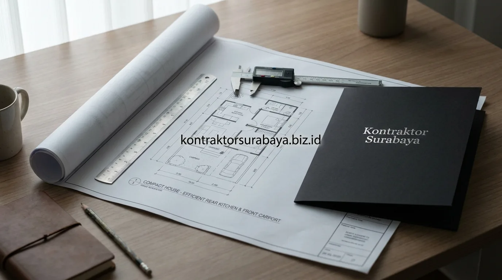

Membeli rumah subsidi di kawasan berkembang Sidoarjo seperti Krian, Candi, Tulangan, Sedati, hingga Sukodono merupakan langkah awal kepemilikan hunian yang sangat populer. Namun, unit standar rumah subsidi (tipe 30/60 atau 36/72) dari developer umumnya belum dilengkapi dapur tertutup dan memiliki sisa tanah belakang berkisar antara 1,5 hingga 3 meter. Merenovasi area belakang ini menjadi dapur fungsional, tempat cuci jemur, serta penataan carport di bagian depan membutuhkan perencanaan cermat agar rumah tetap sejuk dan tidak melebihi anggaran.
1. Karakteristik Lahan Belakang Rumah Subsidi Tipe Standar
Lahan belakang rumah subsidi umumnya berukuran sangat terbatas, sering kali hanya cukup untuk area servis kecil tanpa ruang tambahan yang signifikan.
Keterbatasan ini membuat setiap keputusan renovasi perlu mempertimbangkan efisiensi maksimal, karena penambahan satu fungsi ruang biasanya berarti mengurangi luas fungsi lain. Oleh karena itu, perencanaan denah yang cermat menjadi kunci sebelum pekerjaan fisik pembongkaran atau pemasangan dinding bata ringan dimulai.
2. Penataan Dapur yang Efisien untuk Ruang Terbatas
Kitchen set berbentuk L atau I, rak dinding untuk penyimpanan vertikal, dan jendela kecil untuk sirkulasi udara adalah tiga elemen yang membantu dapur tetap fungsional meski berada di ruang terbatas:
- Kitchen Set Model 'I-Line' atau 'L-Shape': Bentuk memanjang satu sisi atau sudut L memanfaatkan panjang dinding sisa kavling tanpa memakan lebar area sirkulasi memasak.
- Rak Gantung Vertikal (Ambalan Dinding): Memaksimalkan dinding atas hingga dekat plafon untuk menyimpan bumbu, piring, dan peralatan masak tanpa membebani lantai.
- Zonasi Meja Kompor & Sink Cuci: Memisahkan area basah (bak cuci piring) dan area panas (kompor gas/induksi) dengan jarak minimal 60 cm untuk keamanan dan kenyamanan gerak.
- Bukaan Cahaya & Exhaust Fan: Memastikan asap masakan langsung terbuang keluar tanpa mengotori ruang keluarga atau kamar tidur.

3. Solusi Carport Minimalis yang Tidak Mengorbankan Ruang Dapur
Carport dengan atap kanopi ringan yang menempel pada dinding samping rumah memungkinkan area parkir tetap tersedia tanpa mengurangi luas dapur secara signifikan.
Pada lahan yang sangat terbatas, carport tidak selalu memerlukan struktur tiang kolom beton besar yang memakan bahu jalan, melainkan dapat memanfaatkan kanopi baja ringan atau besi hollow gantung (cantilever) yang menempel langsung pada dinding samping rumah. Pendekatan ini memastikan kendaraan roda empat maupun sepeda motor terlindung dari terik matahari dan hujan lebat tanpa menyita area resapan air depan.
4. Bagaimana Struktur Tambahan Disesuaikan dengan Pondasi Rumah Subsidi?
Pondasi rumah subsidi umumnya dirancang untuk beban standar tipe rumah tersebut, sehingga penambahan struktur di bagian belakang perlu menggunakan material ringan agar tidak membebani pondasi asli secara berlebihan.
Evaluasi kondisi pondasi eksisting menjadi langkah penting sebelum menambahkan struktur baru. Rumah subsidi umumnya tidak dirancang dengan margin kekuatan berlebih untuk dak beton 2 lantai tanpa perkuatan cakar ayam (footplate) baru. Memilih rangka atap baja ringan dan dinding bata ringan (hebel) adalah solusi paling aman untuk mencegah keretakan struktur lama.
5. Material Ringan dan Efisien untuk Renovasi Area Belakang
Atap polikarbonat atau spandek ringan, rangka baja ringan galvalum, dan kitchen set berbahan multipleks lapis HPL adalah tiga material yang efisien dari sisi biaya maupun beban struktur untuk renovasi area belakang rumah subsidi:
- Rangka Atap Galvalum / Baja Ringan: Anti karat, anti rayap, berbobot sangat ringan, dan berbiaya pemasangan sangat ekonomis.
- Penutup Atap Alderon / Spandek Pasir: Meredam suara gemuruh hujan dan memantulkan panas terik matahari Sidoarjo secara efektif.
- Dinding Bata Ringan (Hebel): Proses pemasangan jauh lebih cepat, presisi, dan bobotnya hanya sepertiga dibanding bata merah konvensional.
- Kitchen Set Multipleks Finishing HPL: Tahan terhadap percikan air, mudah dibersihkan dari noda minyak, dan tampil modern minimalis.
6. Kesalahan Umum saat Merenovasi Area Belakang Rumah Subsidi
Menambah struktur tanpa mengevaluasi pondasi, memaksakan denah dapur ideal tanpa menyesuaikan luas lahan, mengabaikan sirkulasi udara, dan tidak memperhitungkan jalur drainase adalah empat kesalahan umum dalam renovasi area belakang rumah subsidi:
- Menutup Total Tanpa Ventilasi (Ruang Kedap): Menyebabkan rumah menjadi sangat panas, pengap, dan bau masakan terperangkap di dalam ruangan.
- Mengabaikan Kemiringan Talang Pembuangan Air: Mengakibatkan air hujan meluap ke dalam dapur saat hujan deras mengguyur.
- Membuat Meja Cor Dapur Terlalu Lebar: Menyisakan lorong gerak yang terlalu sempit sehingga sulit untuk beraktivitas berdua di dapur.
- Memasang Instalasi Listrik Sembarangan: Menempatkan colokan listrik terlalu dekat dengan bak cuci piring yang berisiko korsleting.
"Kunci keberhasilan renovasi rumah subsidi adalah keseimbangan antara efisiensi biaya, fungsionalitas ruang dapur, dan kelancaran sirkulasi udara alami."
Setiap rumah subsidi memiliki kondisi lahan dan struktur yang sedikit berbeda, sehingga solusi renovasi perlu disesuaikan melalui survei langsung sebelum menentukan denah akhir. Pelajari cakupan layanan renovasi lengkap pada halaman jasa renovasi rumah Surabaya, atau lihat ragam layanan lain pada halaman layanan kami.